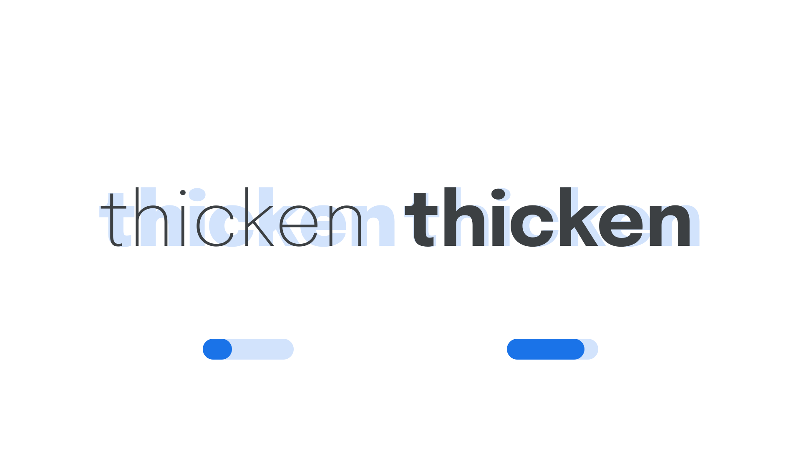

Weight axis (wght)
By Google Fonts Knowledge contributors · Google Fonts Knowledge.
Original article · Source on GitHub · CC BY-SA 4.0. Text, illustrations and existing credits reproduced from the licensed Knowledge repository. Open Shelf adapted the layout and links; these adaptations are also CC BY-SA 4.0. No endorsement implied.
“Weight” (wght in CSS) is an axis found in many variable fonts. It controls the font file’s weight parameter.
The Google Fonts CSS v2 API defines the axis as:
| Default: | Min: | Max: | Step: |
|---|---|---|---|
| 400 | 1 | 1000 | 1 |

Typeface: Epilogue
Weight is the overall thickness of a typeface’s strokes in any given font. The most common weights are regular and bold, but weights can cover extremes from the very light to the very heavy. With the weight axis in variable fonts, the number of instances or weights is effectively unlimited.
In CSS, we can assign a variable weight property to an element of our choosing:
p {
font-weight: 350;
}
strong {
font-weight: 780;
}
Unlike in non-variable fonts, the font-weight values no longer have to be declared in units of 100. Rather than have body copy set in a Regular weight, which would usually sit at 400, we can set it a little lighter, at 350. Similarly, whereas strong text would usually be set in a Bold weight, we’re setting it at 780: heavier than a Bold (700), but not quite as heavy as an ExtraBold (800).
In line with the current CSS spec, the four-character code for this axis should be referenced in UPPERCASE (as only the five axes registered in the OpenType format specification should appear in lowercase). Also, when using the Google Fonts API, the lowercase axes have to appear first in the URL, followed by the uppercase, each in alphabetical order.